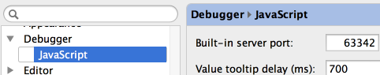

It is very easily to change the built-in web server port (File | Settings – Debugger – JavaScript), and use the “Built-in server port” spinner to set the new value.

Next, open an HTML page in your browser and see it running on the defined port.